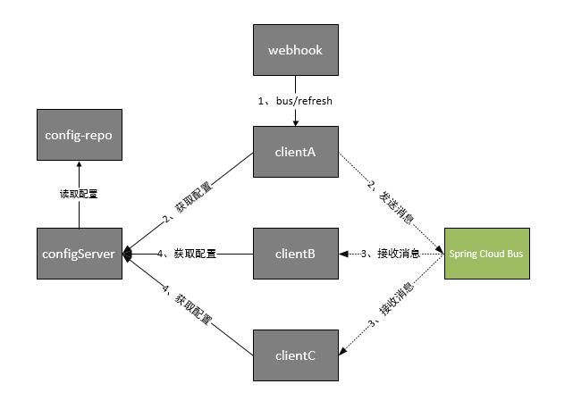

消息总线 spring cloud bus¶
应用场景¶
上面的Refresh方案虽然可以解决单个微服务运行期间重载配置信息的问题， 但是在真正的实践生产中，可能会有N多的服务需要更新配置，如果每次依靠 手动Refresh将是一个巨大的工作量， 这时候Spring Cloud提出了另外一个解决方案：Spring Cloud Bus
Spring Cloud Bus通过轻量消息代理连接各个分布的节点。这会用在广播状态的变化（例如配置变化）或者其它的消息指令中。Spring Cloud Bus的一个核心思想是通过分布式的启动器对Spring Boot应用进行扩展，也可以用来建立一个或多个应用之间的通信频道。目前唯一实现的方式是用AMQP消息代理作为通道。
Spring Cloud Bus是轻量级的通讯组件，也可以用在其它类似的场景中。有了Spring Cloud Bus之后，当我们改变配置文件提交到版本库中时，会自动的触发对应实例的Refresh，具体的工作流程如下：
根据此图我们可以看出利用Spring Cloud Bus做配置更新的步骤:
- 提交代码触发post给客户端A发送bus/refresh
- 客户端A接收到请求从Server端更新配置并且发送给Spring Cloud Bus
- Spring Cloud bus接到消息并通知给其它客户端
- 其它客户端接收到通知，请求Server端获取最新配置
- 全部客户端均获取到最新的配置
安装rabbitMq¶
这里使用rabbitMq,当然也可以使用其他消息中间件如kafka等 安装步骤直接google
改造 config-client¶
1. pom.xml 中增加依赖
<dependency>
<groupId>org.springframework.cloud</groupId>
<artifactId>spring-cloud-starter-bus-amqp</artifactId>
</dependency>
2. controller 类上增加注解
@RefreshScope
没有验证在启动类上增加该注解是否管用
3. 修改配置文件
bootstrap.yml 配置如下
spring:
cloud:
config:
profile: dev
label: master
name: config-client
discovery:
enabled: true
serviceId: config-server
bus:
trace:
enabled: true
eureka:
client:
serviceUrl:
defaultZone: http://localhost:8889/eureka
4. application.yml 配置如下
spring:
application:
name: config-client
rabbitmq:
host: localhost
port: 5672
username: guest
password: guest
management:
security:
enabled: false
server:
port: 9010
5. 使用步骤
启动 rabbitMq服务 -> eureka-server -> config-server -> config-client
这时访问 http://localhost:9010/hi?name=wenchaofu 浏览器显示
wenchaofu in config client v1212121266666666666
修改 git 仓库的配置文件，将foo属性修改为 foo=123 如果是传统的做法，需要重启服务，才能达到配置文件的更新。 此时，我们只需要发送post请求(这里使用postman)
你会发现config-client会重新读取配置文件 再次访问
- 会发现配置已经修改成功
- wenchaofu in config client 123
改进版本¶
在上面的流程中，我们已经到达了利用消息总线触发一个客户端bus/refresh,而刷新所有客户端的配置的目的。但这种方式并不优雅。原因如下：
- 打破了微服务的职责单一性。微服务本身是业务模块，它本不应该承担配置刷新的职责。
- 破坏了微服务各节点的对等性。
- 有一定的局限性。例如，微服务在迁移时，它的网络地址常常会发生变化， 此时如果想要做到自动刷新，那就不得不修改WebHook的配置。
架构模式改变如下

这时Spring Cloud Bus做配置更新步骤如下:
- 提交代码触发post请求给bus/refresh
- server端接收到请求并发送给Spring Cloud Bus
- Spring Cloud bus接到消息并通知给其它客户端
- 其它客户端接收到通知，请求Server端获取最新配置
- 全部客户端均获取到最新的配置
改进版本修改步骤¶
1. 增加依赖
- <dependencies>
- <dependency>
- <groupId>org.springframework.cloud</groupId> <artifactId>spring-cloud-config-server</artifactId>
</dependency> <dependency>
<groupId>org.springframework.cloud</groupId> <artifactId>spring-cloud-starter-bus-amqp</artifactId></dependency> <dependency>
<groupId>org.springframework.cloud</groupId> <artifactId>spring-cloud-starter-eureka</artifactId></dependency>
</dependencies>
需要多引入spring-cloud-starter-bus-amqp包，增加对消息总线的支持
2. 配置文件
application.yml 中增加关闭安全验证
management:
security:
enabled: false
3. 刷新
9000是 config server 的端口
再次访问客户端，已经可以拿到最新配置
其他¶
局部刷新¶
某些场景下（例如灰度发布），我们可能只想刷新部分微服务的配置，此时可通过/bus/refresh端点的destination参数来定位要刷新的应用程序。
例如：/bus/refresh?destination=customers:8000，这样消息总线上的微服务实例就会根据destination参数的值来判断是否需要要刷新。其中，customers:8000指的是各个微服务的ApplicationContext ID。
destination参数也可以用来定位特定的微服务。例如：/bus/refresh?destination=customers:**，这样就可以触发customers微服务所有实例的配置刷新。
跟踪总线事件¶
一些场景下，我们可能希望知道Spring Cloud Bus事件传播的细节。此时，我们可以跟踪总线事件（RemoteApplicationEvent的子类都是总线事件）。
跟踪总线事件非常简单，只需设置spring.cloud.bus.trace.enabled=true，这样在/bus/refresh端点被请求后，访问/trace端点就可获得类似如下的结果：